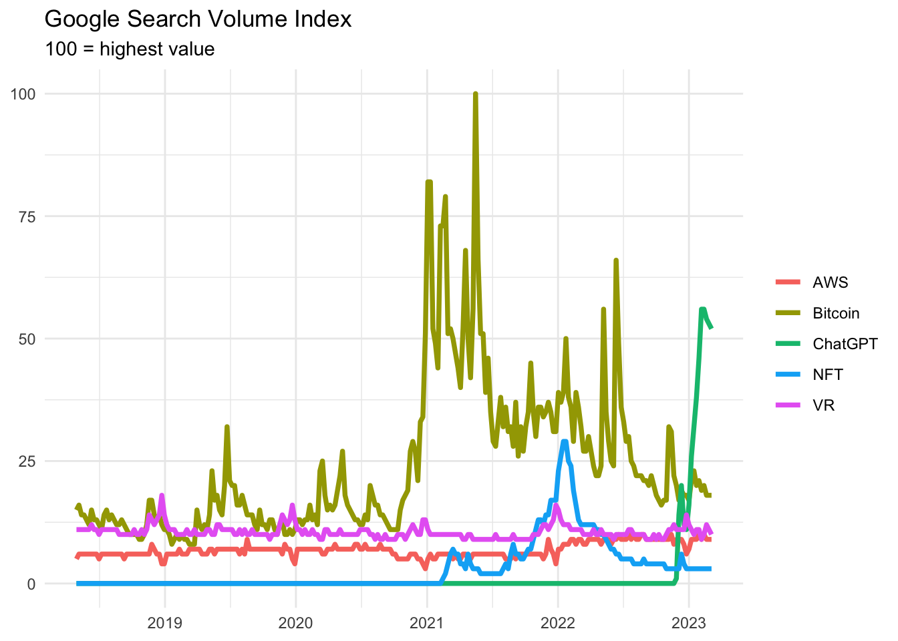

Neumann’s work was indispensable for the development of computer technology and its current level. An example of this is the ChatGPT, what does unbeatable in what it’s supposed to do: generate text.
Original blog post (Hungarian) available at: Economania
John von Neumann mainly conducted research in the fields of mathematics, natural sciences and IT. In the 1930s, he participated in the development of mathematical logic and the planning of the first steps in computer technology. He was the first to give an idea for the development of the basic principles of computer technology and as a participant in the first computer, the “Manhattan Project”, he participated in its design and construction.
Based on Neumann’s vision, the first computers worked on the principle of programmability, which allowed them to perform multiple tasks without having to rebuild them. He was also the first to write about memory and how it works, which was the basis for the development of computers.
Neumann’s work was indispensable for the development of computer technology and its current level. His memory will remain forever in the history of computer technology as one of the most important founders and creators of the basic principles of computers.
The previous 3 paragraphs were produced by the ChatGPT, which is a good example of the applicability of the latest achievements in computer technology. Even after many weeks of active research, I probably couldn’t summarise Neumann’s importance more accurately in a blog post, the “artificial intelligence” (as many people refer to it) that currently dominates the public discourse can do it all in just seconds. But why is it so effective and what else can it do?
ChatGPT is based on a transformer architecture, the purpose of which is to form a dialogue with its user. More specifically, the GPT (Generative Pre-trained Transformer) itself means that it predicts the appropriateness of the next token (a piece of text) based on previously learned samples from a database. The model was built by having a mixture of a training database and sample answers from human-generated dialogues, and then also humans taught it about which answers they like (OpenAi, 2023).
The outcome is an interface that generates dialogues that immediately pushed the popular digital frenzies of recent years into the background in the field of Internet searches (see the attached figure). Many people may have tried it in order to admire the new achievement of technology, but many forums have already mentioned (mainly in an ominous tone) how ChatGPT can transform our lives. Is this the technology that will really take away the jobs of “white-collar” workers?
library(tidyverse)
gtrendsR::gtrends(
keyword = c("ChatGPT", "Bitcoin", "NFT", "VR", "AWS")
) |>
pluck(1) |>
mutate(
hits = as.numeric(hits),
hits = ifelse(is.na(hits), 0, hits)
) |>
filter(date < "2023-03-09") |>
select(date, hits, keyword) |>
ggplot() +
aes(date, hits, color = keyword) +
geom_line(size = 1.3) +
labs(
x = NULL,
y = NULL,
title = "Google Search Volume Index",
subtitle = "100 = highest value",
color = NULL
) +
theme_minimal() +
theme(plot.caption.position = "plot")
In response to these, memes were immediately born: “ChatGPT could only replace the programmers if the clients could tell us what they wanted. We are safe for now.” The truth lies somewhere in between.
ChatGPT does unbeatable in what it’s supposed to do: generate text. But the creators also draw attention to the fact that the answer is always generated in such a way that it seems to be true, while it is often not even close to the truth (OpenAi, 2023). The reason for this is that during the training, it solves the task of selecting the most accepted text, but there is no training database that labelled which information is correct and which is not, so it cannot check the validity of the information. Accordingly, it cannot compete in areas where a real understanding of a given topic is required.
How can ChatGPT and its “relatives” transform our lives in the short run? The weights of the tasks of those performing intellectual work will definitely be reevaluated. The importance of drafting an official e-mail or preparing low-priority summaries is reduced, but those who can properly integrate these technologies into their complex and new knowledge-creating work can achieve many times more efficiency. However, it is certain that a model created to generate text will not wake up to self-awareness tomorrow and tame humanity. At most, it will write us another one based on the science fiction stories in the training database.
References
OpenAi (2023). Introducing ChatGPT. URL: https://openai.com/blog/chatgpt (visited on Mar. 6, 2023).